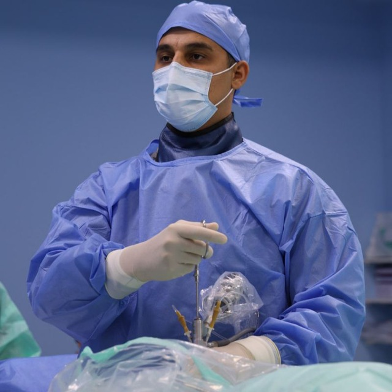

Первичная консультация
Осмотр, сбор жалоб, неврологический статус, план лечения.
- объясняю причину боли простыми словами
- разбираю МРТ/КТ
- даю пошаговые рекомендации
Консультация вертебролога/нейрохирурга: осмотр, разбор МРТ/КТ, рекомендации и контроль динамики.

Если не уверены, что выбрать — просто напишите/позвоните.
Осмотр, сбор жалоб, неврологический статус, план лечения.
Подходит, если вы из другого города или хотите «второе мнение».
Наблюдение в динамике и корректировка плана лечения.
Ниже — самые частые жалобы пациентов.
Запишитесь через Taplink или позвоните.
Информация на сайте носит ознакомительный характер и не заменяет очную консультацию врача.